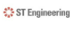
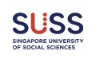

AI & automation
Exploring AI-agent workflows and internal digital solutions with OutSystems, MSS AI Workbench, and DS&C AI Playground.
A little about my journey
I’m Jasmine, a software engineer and AI integrator, and an ASEAN Undergraduate Scholar studying Information & Communication Technology at SUSS, with a minor in Generative AI.
My one-minute introduction · TMA02
I started my journey in software engineering behind the screen, immersed in syntax, logic flows, and technical implementation. As an ASEAN Undergraduate Scholar at Singapore University of Social Sciences (SUSS) pursuing Information & Communication Technology with a minor in Generative AI, I initially measured value purely through code execution. However, observing digital adoption challenges across Southeast Asia made me confront an uncomfortable reality: teams eagerly build emerging tech, yet critical solutions often disconnect from the very users who need them most.
That friction became my turning point. Pushing past my comfort zone, I led cloud architecture to secure Second Prize globally at the Huawei ICT Competition Finals in Shenzhen, and developed an empathetic patient support platform for Her Code, Her Cause. Seeing how accessible design transformed lives under real-world pressure rewired my mindset: technology is only as impactful as the human empathy engineered into it.
Anchored in my CliftonStrengths—Restorative, Learner, and Responsibility—I have grown into a bridge between emerging technology and practical human needs. I have supported Southeast Asian language data quality at AI Singapore and helped develop workflow automation and AI-agent solutions during my ST Engineering internship. My mission remains: bridging technology gaps to drive cross-border digital impact across ASEAN.
What I bring
Exploring AI-agent workflows and internal digital solutions with OutSystems, MSS AI Workbench, and DS&C AI Playground.
Supporting multilingual data creation and quality evaluation for Southeast Asian language projects at AI Singapore.
Building clear, accessible web experiences and content systems that help people find what they need.
Learning and doing
Jan 2026 — Aug 2026

Supported internal digital solutions for corporate workflow automation. Worked with MSS AI Workbench and DS&C AI Playground, including assistance with autonomous AI-agent architecture.
Feb 2025 — Mar 2026
Contributed to a regional Southeast Asian language data collection project through multilingual data creation and data quality evaluation.
Oct 2024 — Jan 2026

Revamped and maintained the Graduate Studies website using HTML and CSS, collaborating with the manager, faculty, and in-house IT team. Updated web content and supported digital communications.
Mar 2021 — Oct 2021
Early professional experience in a global technology services environment.
Jan 2018 — Apr 2018
Supported customers at a computer hardware and IT retail store in Sim Lim Square.
Jun 2023 — May 2027
Information Technology · ASEAN Undergraduate Scholar
2019 — 2022
GPA 3.76 / 4.0 · ASEAN scholarship recipient
Let’s connect
I’d love to hear what you’re working on.